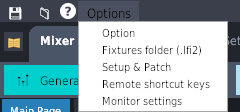
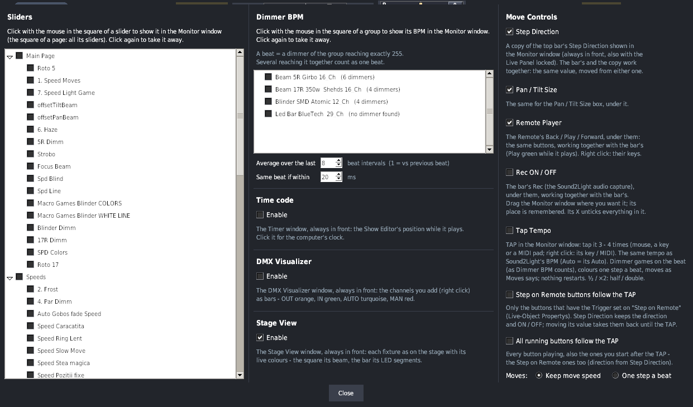
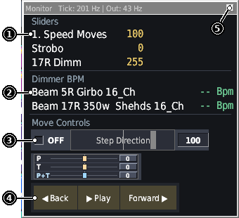

For: FullPlayer
The Monitor is a small window that stays in front of everything, also over the Live panel locked for the show. It shows what you choose: the value of some sliders, the BPM of the dimmers of some groups, and copies of the controls of the top bar. It is refreshed twice a second.
Options > Monitor settings (the menu at the top left):


| Part | What it does |
|---|---|
| Sliders | The sliders of the Live panel, page by page. Click the square of a slider to show it in the Monitor; click the square of a page to show all its sliders. Click again to take it away. |
| Dimmer BPM | The fixture groups. Ticked, the Monitor shows the BPM of that group: a beat is a dimmer of the group reaching exactly 255; several reaching it together count as one beat. |
| Average over the last N beat intervals | How many beats the BPM is averaged over (1 = against the beat before). |
| Same beat if within N ms | Hits closer than this are taken as one beat. |
| Time code - Enable | The Timer window, always in front: the position of the Show Editor while it plays. Click it for the clock of the computer. |
| DMX Visualizer - Enable | The DMX Visualizer window, always in front: the channels you add (right-click) as bars - OUT orange, IN green, AUTO turquoise, MAN red. |
| Stage View - Enable | The Stage View window, always in front: each fixture as on the stage with its live colours - the square its beam, the bar its LED segments. See Stage View. |
| Move Controls | Copies of controls of the top bar in the Monitor: Step Direction, Pan / Tilt Size, Remote Player (Back / Play / Forward) and Rec ON / OFF. They work together with the bar: the same value, moved from either one. And Tap Tempo: the TAP row (see Tap Tempo). |
| Close | Closes the settings. What you chose is kept at once. |

Two sliders and 17R Dimm, the BPM of two groups (no beats yet), Step Direction, Pan / Tilt Size and the Remote Player.
| 1 | The sliders chosen, with their value (and the speed multiplier for a speed slider). |
| 2 | The BPM of each group chosen ("--" until there are beats). |
| 3 | The copies of Step Direction and Pan / Tilt Size - use them as on the bar. |
| 4 | The Remote Player: Back / Play / Forward (Play is green while it plays). Right-click: their keys. |
| 5 | The X closes the Monitor and unticks everything in it. |
Drag the Monitor by its body to where you want it; its place is remembered. The sliders and groups chosen are kept in the S2L.dat of the project, the Move Controls in the settings of the program.
Tick Tap Tempo in the Move Controls of Monitor settings and the Monitor gets a TAP row: tap the beat and the chases you choose follow it, rounded to whole bars. All of it is on its own page: Tap Tempo.
With a second screen for the show, put the Monitor next to the locked Live panel: the important values and the remote player stay in view all the time.